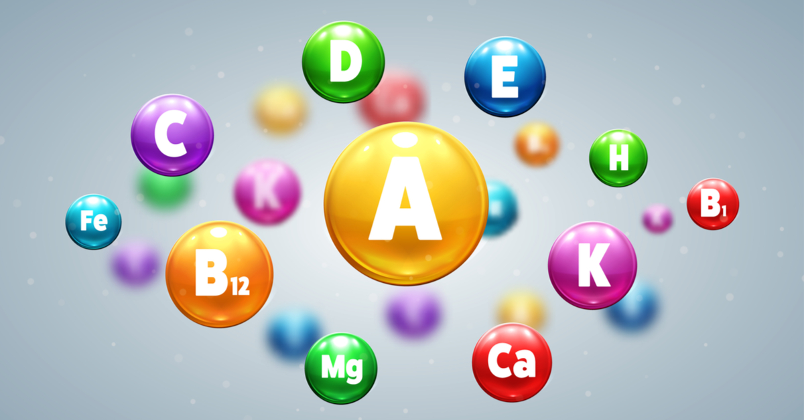

العلاج يختلف حسب المرض ونوع الأعراض
- الأدوية المثبطة للمناعة مثل: الكورتيزون (Prednisone)
 أدوية بيولوجية: تستخدم خصيصًا لأمراض مثل الروماتويد
أدوية بيولوجية: تستخدم خصيصًا لأمراض مثل الروماتويد مضادات الالتهاب اللاستيرويدية (NSAIDs)
مضادات الالتهاب اللاستيرويدية (NSAIDs)-  المكملات الغذائية والفيتامينات مثل D و B12
 العلاج الطبيعي للمساعدة في حركة المفاصل
العلاج الطبيعي للمساعدة في حركة المفاصل- تعديل نمط الحياة: تقليل التوتر، نوم كافٍ، رياضة خفيفة
- التغذية الصحية: أكل مضاد للالتهابات مثل الأوميغا 3 والخضروات